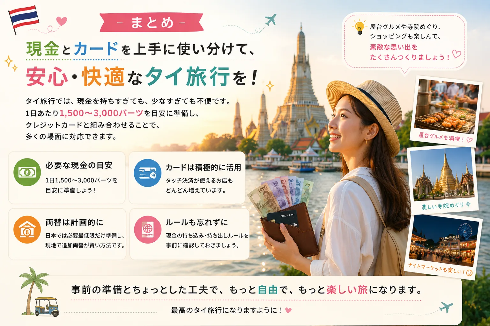

タイ旅行の現金準備で迷いやすいこと
タイ旅行の準備を始めると、多くの方が一度は「現金はいくら持って行けば足りる？」「クレジットカードだけで旅行できる？」「両替しすぎて余ったらもったいない？」という疑問にぶつかります。
タイはキャッシュレス化が進んでいる国の一つですが、屋台やローカル食堂、個人商店などでは現金しか利用できない場面も少なくありません。そのため、必要以上に持ち歩かず、でも足りなくならない金額を準備することが大切です。
本記事は、タイ旅行初心者にもわかりやすいように、日数別の現金目安、現金が必要になる場面、クレジットカード・キャッシュレス事情、おすすめの両替方法、現金の持ち込み・持ち出しルールを整理します。
結論｜タイ旅行では1日1,500〜3,000バーツを目安に準備しよう
結論からお伝えすると、タイ旅行では1日あたり1,500〜3,000バーツを目安に準備しておくと安心です。
ホテル代や航空券を事前決済している場合、現地で必要になるのは主に食事代、BTS・MRTなどの交通費、マッサージ、カフェ、屋台、お土産、ナイトマーケットなどの費用です。
| 旅行スタイル | 1日あたりの現金目安 |
|---|---|
| 屋台・ローカル食堂中心 | 1,500〜2,000THB |
| 一般的な観光旅行 | 2,000〜2,500THB |
| ショッピング・マッサージも満喫 | 2,500〜3,000THB |
クレジットカードやタッチ決済を活用する場合は、さらに現金を減らすことも可能です。
【旅行日数別】必要な現金の目安
ホテル代・航空券を除いた、現地で使う現金の目安です。ここでは1THB＝約4.4円換算の目安で整理しています。
| 旅行日数 | 現金の目安 |
|---|---|
| 2泊3日 | 5,000〜7,000THB（約2.2〜3.1万円） |
| 3泊4日 | 7,000〜10,000THB（約3.1〜4.4万円） |
| 4泊5日 | 9,000〜13,000THB（約4.0〜5.7万円） |
| 5泊7日 | 12,000〜18,000THB（約5.3〜7.9万円） |
あくまで一般的な観光旅行を想定した金額です。高級レストランを利用したり、ブランド品を購入したりする場合は、別途予算を考えておきましょう。
日数別の考え方
2泊3日のタイ旅行なら現金はいくら必要？
初めてのタイ旅行で人気なのが2泊3日です。この場合は5,000〜7,000バーツ程度を準備すると安心でしょう。空港〜ホテルの移動、食事、BTS・MRT、カフェ、コンビニ、お土産、寺院巡りなどに使います。
ブランド品など高額な買い物をしなければ、大きく不足するケースは少ないでしょう。
3泊4日のタイ旅行なら現金はいくら必要？
もっとも人気の旅行日数が3泊4日です。マッサージ、ナイトマーケット、カフェ巡り、ショッピングなども楽しむ方が多いため、7,000〜10,000バーツ程度を目安にすると安心です。
ホテルや大型商業施設ではクレジットカードを利用し、屋台や市場では現金を使うようにすると、持ち歩く現金も最小限に抑えられます。
5泊7日のタイ旅行なら現金はいくら必要？
5泊7日になると滞在期間も長くなるため、目安は12,000〜18,000バーツ程度です。ただし、最初から全額を両替する必要はありません。
日本では必要最低限だけ両替、空港では交通費程度だけ両替、市内で必要に応じて追加する方法がおすすめです。詳しくはタイ旅行の両替は日本と現地どっちがお得？の記事も参考にしてください。
現金が必要になる場面
「タイはキャッシュレスだから現金はいらない」というイメージを持つ方もいますが、実際には現金が必要になる場面は少なくありません。
- 屋台
- ナイトマーケット
- ローカル食堂
- 個人商店
- 寺院のお賽銭
- 一部のタクシー
- チップ
一方で、ホテルや大型ショッピングモール、チェーン店ではクレジットカードやタッチ決済が利用できる店舗も増えています。「現金だけ」「カードだけ」ではなく、両方を組み合わせるのが快適です。
高額紙幣だけではなく、小額紙幣も用意しておこう
タイでは1,000バーツ札しか持っていないと「お釣りがない」と言われることがあります。20バーツ札、50バーツ札、100バーツ札を数枚ずつ持っておくと便利です。
コンビニなどで早めに崩しておくと、屋台や市場、BTSなどでもスムーズに支払えます。防犯面でも高額紙幣を何枚も見せるのは避け、小額紙幣を中心に持ち歩くことをおすすめします。
クレジットカードやQRコード決済だけでタイ旅行はできる？
バンコク中心部を旅行するのであれば、クレジットカードをメインに利用することは十分可能です。ただし、現金が必要になる場面もまだ多く残っているため、完全なキャッシュレス旅行はおすすめできません。
バンコク中心部ならクレジットカードはかなり使える
ホテルや大型ショッピングモール、デパート、チェーン系レストランでは、VisaやMastercardを中心にクレジットカードが利用できる店舗が数多くあります。近年ではコンタクトレス決済対応の店舗も増えています。
一方で、屋台、ナイトマーケット、ローカル食堂、個人経営のカフェ、一部のタクシー、小規模なお土産店では現金のみの場合があります。
PromptPay（QRコード決済）は旅行者にはハードルが高い
タイでは多くのお店でPromptPayというQRコード決済が利用されています。ただし、PromptPayはタイ国内の銀行口座と連携する仕組みのため、短期旅行者が利用するのは基本的に難しいのが現状です。
旅行者向けには「TAGTHAi Easy Pay」のようなサービスもありますが、アプリ登録、カード発行、現地でのチャージなどの手続きが必要です。数日間の旅行であれば、現金とクレジットカードを組み合わせる方がスムーズでしょう。
スマートフォン決済だけに頼るのはおすすめしない
日本ではApple PayやGoogle Payなどのスマートフォン決済が広く普及しています。一方、タイでは利用できる店舗は増えているものの、日本ほど普及しているわけではありません。
スマホだけ持って行けば大丈夫とは考えず、クレジットカードの物理カードと現金も必ず準備しておくことをおすすめします。
両替は一度にまとめてしなくても大丈夫
最初に全部両替した方がお得なのか迷う方も多いでしょう。結論から言うと、一度に全額を両替する必要はありません。
タイにはレートの良い両替所が数多くあり、市内でも追加両替がしやすい環境が整っています。おすすめなのは、日本では必要最低限だけ両替し、空港では交通費程度だけ両替し、市内で必要に応じて追加する方法です。
この方法なら、余ったタイバーツを日本へ持ち帰るリスクも減らせます。ATMでの現金受け取りを検討する方は、Cashmallow ATMの使い方記事もあわせて確認してください。
タイで両替するときの注意点
パスポートを忘れずに持参する
タイの多くの両替所では、本人確認のためパスポートの提示が必要です。コピーでは対応できない場合もあるため、原本を持参しましょう。
できるだけきれいな日本円を持っていく
破れや汚れ、落書きがある日本円は、両替を断られることがあります。できるだけ新しくきれいな紙幣を準備しておくと安心です。
両替後はその場で金額を確認する
受け取ったタイバーツは、カウンターを離れる前に枚数と金額を確認しましょう。万が一間違いがあっても、その場であれば対応してもらえるケースがあります。
営業時間を事前に確認する
人気の両替所でも、店舗によって営業時間は異なります。日曜日や祝日に休業する店舗もあるため、旅行スケジュールに合わせて事前に確認しておくと安心です。
意外と知られていない「現金の持ち込み・持ち出し」ルール
タイ旅行では「現金はいくら必要か」に意識が向きがちですが、あわせて知っておきたいのが現金の持ち込み・持ち出しに関するルールです。
タイへ現金を持ち込む場合
タイ入国時に、タイバーツと外貨を合わせて45万バーツ相当額を超える現金を持ち込む場合は、税関への申告が必要です。通常の旅行で準備する現金であれば、この金額を超えることはほとんどないでしょう。
タイから現金を持ち出す場合
タイからタイバーツを持ち出す場合は、原則として5万バーツまでとされています。なお、ラオス・カンボジア・マレーシア・ミャンマー・ベトナムなど、タイと国境を接する国へ出国する場合は、適用される上限額が異なるため注意が必要です。
制度は変更される可能性もあるため、心配な場合は出発前にタイ大使館や税関などの公式情報を確認しておくと安心です。
よくある質問（FAQ）
タイ旅行は現金だけでも大丈夫ですか？
旅行自体は可能ですが、多額の現金を持ち歩くことになるため、防犯面を考えるとおすすめできません。現金とクレジットカードを併用することで、より安心して旅行を楽しめます。
タイでは日本円をそのまま使えますか？
いいえ。日本円をそのまま支払いに利用できる店舗はほとんどありません。タイバーツへ両替するか、ATMで現地通貨を引き出して利用しましょう。
タイ旅行ではいくら両替すれば安心ですか？
一般的な観光旅行であれば、1日あたり1,500〜3,000バーツを目安に考えると安心です。ホテル代や航空券を事前決済している場合は、この範囲で十分対応できるケースが多いでしょう。
タイ旅行はクレジットカードだけで過ごせますか？
ホテルや大型ショッピングモール、チェーン店ではカードが利用できる場所が増えています。しかし、屋台や市場、ローカル食堂、一部のタクシーなどでは現金しか使えない場合もあります。
スマートフォン決済だけで旅行できますか？
タイでもスマートフォン決済に対応する店舗は増えていますが、日本ほど普及しているわけではありません。物理カードと現金もあわせて準備しておくと安心です。

まとめ
タイ旅行では、現金を持ちすぎても、少なすぎても不便です。一般的な旅行であれば、1日あたり1,500〜3,000バーツを目安に準備し、クレジットカードと組み合わせて利用することで、多くの場面に対応できます。
タイはキャッシュレス化が進んでいる一方で、屋台やローカル食堂、市場などでは現金が必要になることも少なくありません。旅行スタイルに合わせて必要な現金を準備し、足りなくなった場合は現地で追加両替する方法が、無駄も少なく安心です。
旅行で使う現金は、多すぎても少なすぎてもストレスにつながります。大切なのは、いくら持っていくかだけではなく、どこで使うかをイメージして準備することです。